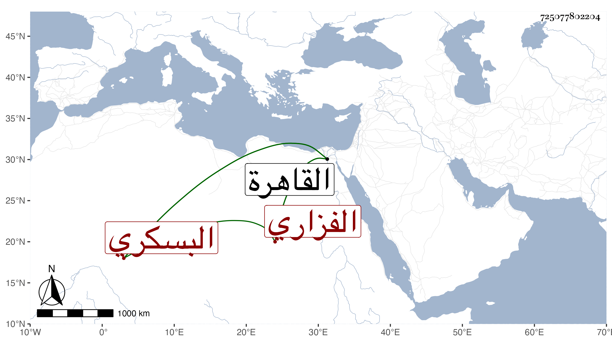

0902Sakhawi.DawLamic.ITO20230111-ara1.EIS1600.725077802204
Biography ID: 725077802204
829
ناصر بن أحمد بن يوسف بن منصور بن فضل بن علي بن أحمد بن حسن ابن عبد المعطي بن الحسين بن علي بن المزني أبو زيان وأبو علي الفزاري البسكري بفتح الموحدة ثم مهملة ساكنة ويعرف بابن مزنى بفتح الميم ثم زاي ساكنة بعدها نون . ولد في المحرم سنة إحدى وثمانين وسبعمائة واشتغل ببلده وأخذ القراآت عن أبي الحسن علي بن عبد الرحمن التوزري وكان يعظمه في الفن جدا وفي الفقه عن أبي فارس عبد العزيز بن يحيى الغساني البرجي ومحمد بن علي بن إبرهيم الخطيب وأبي عبد الله بن عرفة وعيسى بن أحمد الغبريني وسمع عليه الصحيح . وقدم القاهرة سنة ثلاث وثمانمائة فحج فيها وأصيب في كثير من ماله وكتبه في جملة ما وقع في ركب المغاربة من النهب واتفق وقوع النكبة من السلطان بوالده وأهل بيته ببلادهم لغضبه عليه وكان رئيسا ، وبلغ ابنه ذلك فأقام بالقاهرة وعطف عليه الولوي ابن خلدون فسعى له حتى نزل بالشيخونية وسمع بها في صحيح البخاري على التقي الدجوي ولازم شيخنا مدة طويلة قال شيخنا في معجمه واستفدت منه وكتب لي ترجمة مطولة وفيها واتصلت بخدمة سيدنا فلان فآنس الغربة وأنسى الكربة وأحسن المعونة وكفى المؤونة وعمني خيره وبره ووسعني حلمه وصبره قال وشرع صاحب الترجمة في جمع تاريخ للرواة لو قدر أن يبيضه لكان مائة مجلدة وكان قد مارس ذلك إلى أن صار أعرف الناس به فإنه جمع منه في مسوداته ما لا يعد ولا يدخل تحت الحد ولم يقدر له تبييضه ومات فتفرقت مسودته شذر مذر ولعل أكثرها عمل بطائن المجلدات وقال نحوه في الأنباء ولفظه وكان لهجا بالتاريخ وأخبار الرواة جماعة لذلك ضابطا له مكثرا منه وأراد تبييض كتاب واسع في ذلك فأعجلته المنية ثم قال في المعجم وكان قد تحول من الشيخونية ونزل البرقوقية بين القصرين وضعف في سنة اثنتين وعشرين وطالت علته وأفضت إلى رمد فقد منه بصره جملة وكان يترجى البرء فلم يتفق ذلك إلى أن مات في العشرين من شعبان التي تليها . وتبعه المقريزي في عقوده وقال أن صاحب الترجمة كان يتردد إليه وقال رحمه الله ماذا فقدنا من فوائده عوضه الله الجنة .
